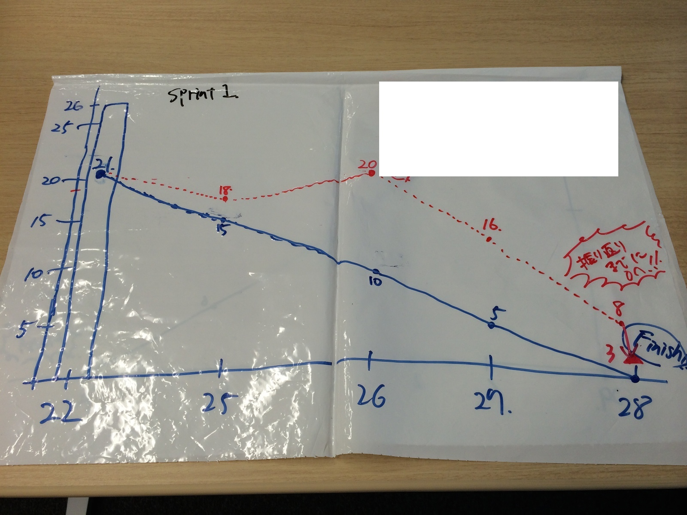

とあるチームのファーストスプリント〜振り返り、バーンダウンはまだしない
2014年8月31日
>夏休みの宿題を思い出した子供のようにまた書き始めてみる。
まずは、前週に自身の印象に残った事を忘備録のように書く事から始める。
簡単な決まりを作っておこうかな ・毎週1記事書いてみる
・書いた後に週を通して無駄にページをメンテナンスし続ける(gitの継続利用とイテレーティブにやるため)
・思いついたらまたルールを追加する
sprint1 最初の振り返り
>自慢じゃありませんが（自慢してるか）、泥臭い事にかけては結構自身があります。
>そんな中周りの方の支援を受けて始めた、サーヴァントチーム
・全員が管理職
・共通のビジョンは未だ無い
・みんなバックボーンが違う
『どうするか？』 そりゃ決まってる 『タスク完了を目標に毎日のリズムを作る』
ぐらいしか初期は無い。
そもそもチーム活動をした事が無いヒトが自分以外ですし。
でっ、Sprint1のバーンダウンチャートがコチラ
